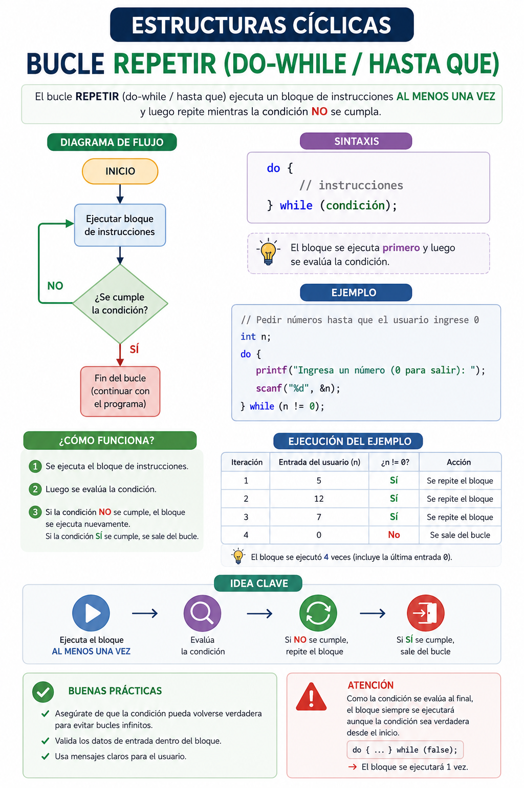

Cuando acudes a un cajero automático o inicias sesión en un videojuego, el sistema te muestra el menú principal de opciones de inmediato. No te pregunta primero si deseas salir del cajero antes de mostrarte la pantalla. El software pinta la interfaz, te permite interactuar y, al final del proceso, evalúa: "¿El usuario seleccionó la opción Salir?". Si la respuesta es no, vuelve a repetir todo. Esto garantiza que las acciones ocurran al menos una vez obligatoriamente.
⚠️ Debes visualizar el video completo sin adelantar para desbloquear la evaluación.
Material audiovisual adaptado con fines estrictamente educativos. Créditos del autor: El Profe Ariel.

A diferencia del bucle Mientras, la estructura Repetir traslada la evaluación de la condición de control al desenlace de la iteración, modificando sustancialmente el comportamiento mínimo del algoritmo.
¿Cuál es la garantía fundamental que ofrece un bucle de tipo post-test (`Repetir`) frente a uno de tipo pre-test (`Mientras`)?
Si necesitas diseñar un algoritmo que solicite una contraseña al usuario y se siga repitiendo obligatoriamente mientras el texto ingresado sea incorrecto, ¿cuál estructura es la óptima para capturar el primer intento?
De acuerdo con Sznajdleder (2012), ¿dónde sitúa la condición de control la estructura de un bucle post-test?
¿Qué sucede en un bucle 'Repetir' si la condición de control es falsa en su primera revisión post-test en un lenguaje formal como C++ o Java (Hacer-Mientras)?
En el contexto real de un cajero automático, ¿qué acción ocurre primero obligatoriamente antes de validar si se desea salir?
¿A qué se refiere el término "Divergencia de Criterio" mencionado en los conceptos clave?
A pesar de la divergencia de sintaxis entre herramientas, ¿qué naturaleza matemática e inequívoca comparten el 'Hacer-Mientras' y el 'Repetir-Hasta Que'?
Cuando el procesador ejecuta la secuencia lineal del cuerpo antes de realizar cualquier tipo de pregunta, está operando bajo:
¿Por qué es ideal la estructura post-test para validaciones de entrada de datos en un programa?
Completando el flujo lógico de la lección: Trasladar la evaluación de la condición de control al desenlace de la iteración tiene como resultado que...